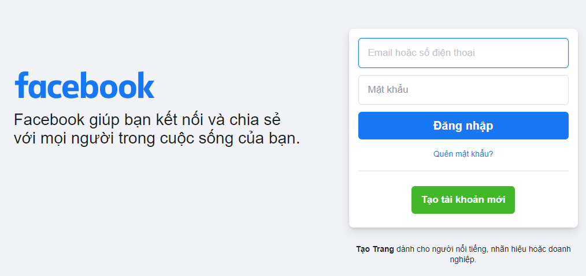
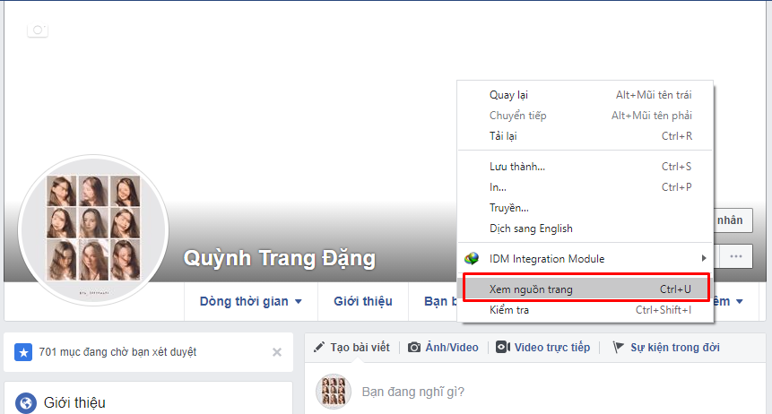
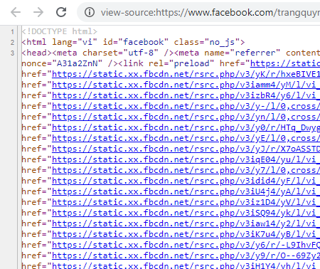
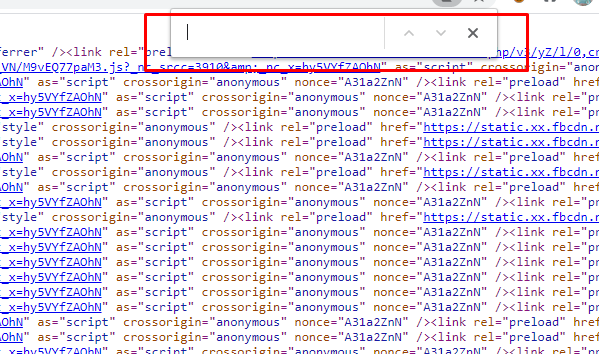
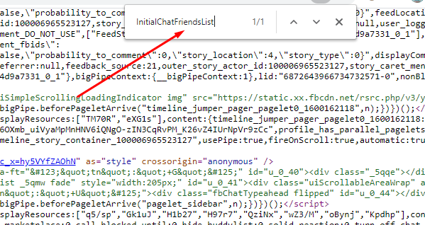
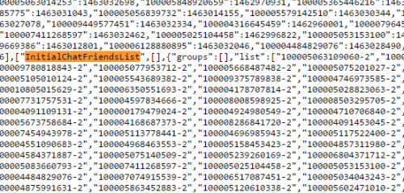
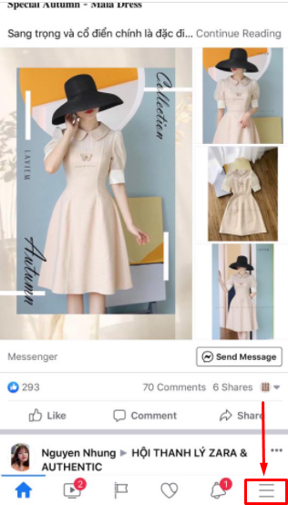
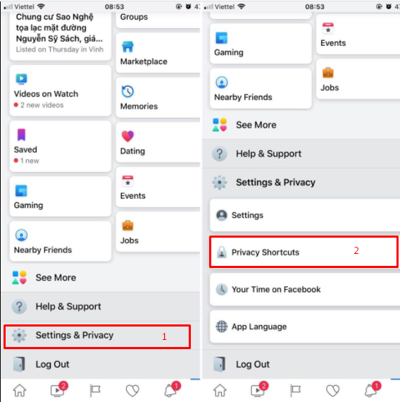

Cách xem ai vào Facebook của mình nhiều nhất cực đơn giản

Ty Nguyen
CEO ❤️ AhaChat. Love babies & chatbot.
Chắc hẳn bạn đã từng tò mò không biết liệu có tài khoản Facebook nào âm thầm vào xem tường tài khoản Facebook của bạn mỗi ngày. Vây cách xem ai vào Facebook của mình nhiều nhất thì làm thế nào? Bài viết dưới đây hướng dẫn bạn cách xem ai vào facebook của mình bằng điện thoại và máy tính cực đơn giản, đừng bỏ lỡ nhé!
1. Cách kiểm tra xem ai vào Facebook của mình nhiều nhất bằng máy tính
Để xem được ai vào tài khoản Facebook của bạn nhiều nhất bằng máy tính, các bước thao tác vô cùng đơn giản, bạn chỉ cần thực hiện theo hướng dẫn sau:
Bước 1: Bạn vào trình duyệt web trên máy tính, truy cập vào website facebook.com, đăng nhập vào tài khoản Facebook của bạn.

Bước 2: Sau khi đăng nhập vào tài khoản Facebook, bạn vào trang cá nhân của Facebook, tại bất cứ vị trí nào, bạn bấm chuột phải và bấm chọn vào mục “Xem nguồn trang”.

Bước 3: Khi bạn bấm chọn xem nguồn trang, source code của facebook cá nhân xuất hiện ở một tab mới.
Hoặc thay vì bấm chuột phải chọn mục Xem nguồn trang, bạn có thể ấn tổ hợp phím Ctrl + U để mở trực tiếp source code của facebook cá nhân.

Bước 4: Tiếp theo, bạn bấm tổ hợp phím Ctrl + F tại trang view - source. Mục đích của việc ấn tổ hợp phím này là để tìm kiếm dòng chữ InitialChatFriendsList.

Tại khoảng trắng ô tìm kiếm sau khi ấn Ctrl + F, bạn copy và dán dòng chữ InitialChatFriendsList vào đó rồi nhấn phím Enter.

Bước 5: Sau khi bạn nhấn phím Enter, bạn sẽ thấy dòng chữ InitialChatFriendsList xuất hiện. Lúc này xuất hiện 1 list ID Facebook của người thường vào tường bạn xem. Các ID có dạng 1000xxxx-2. Và ID chính xác bạn bỏ số 2 ở cuối đi.
VD: 100005543689382-2 -> ta chỉ lấy 100005543689382

Bước 6: Khi có ID Facebook, bạn chỉ cần copy đoạn ID đó dán vào trình duyệt tìm kiếm theo đường dẫn facebook.com/ID (ví dụ facebook.com/100005543689382) rồi ấn Enter, trang cá nhân của ID đó xuất hiện. Như vậy là bạn biết được tài khoản nào vào tường Facebook của bạn xem nhiều nhất.
2. Cách xem ai vào Facebook của mình nhiều nhất bằng điện thoại
Cách xem ai vào facebook của mình nhiều nhất bằng điện thoại hiện tại mới chỉ hỗ trợ ở hệ điều hành IOS. Tuy nhiên, đây mới chỉ là một tính năng thử nghiệm nên không phải dòng iphone nào cũng được hỗ trợ. Nếu điện thoại iphone của bạn cập nhật bản mới nhất của Facebook và hỗ trợ tính năng này ngay trên ứng dụng Facebook trên điện thoại, bạn có thể thực hiện theo các bước sau để xem tài khoản Facebook nào vào tường của mình nhiều nhất:
Bước 1: Bạn mở ứng dụng Facebook trên điện thoại, đăng nhập vào tài khoản Facebook cá nhân. Tại giao diện trang chủ, bấm vào biểu tượng 3 gạch ngang ở góc trái phía dưới màn hình điện thoại như hình dưới.

Bước 2: Sau khi bấm vào biểu tượng 3 gạch ngang, giao diện mới xuất hiện, bạn kéo xuống dưới bấm chọn Settings & Privacy => Privacy Shortcuts.

Bước 3: Tại mục Privacy Shortcuts bạn bấm chọn Who viewed my profile? Lúc này, sẽ xuất hiện 1 list danh sách bạn bè thường vào tường Facebook cá nhân, những ai vào xem tường Facebook của bạn nhiều nhất sẽ nằm ở vị trí đầu tiên. Từ đó bạn dễ dàng xác định được tài khoản Facebook đó là của ai.
Như vậy, chỉ với vài bước đơn giản bạn đã biết cách xem ai vừa vào tường Facebook của bạn cũng như tài khoản nào vào xem nhiều nhất bằng điện thoại iphone.
Còn với điện thoại hệ điều hành Android hiện nay chưa có mục Who viewed my profile. Vì vậy nếu bạn muốn xem ai vào tường Facebook của mình nhiều nhất, bạn vào trình duyệt chrome trên điện thoại, truy cập vào website facebook.com, sau đó thực hiện các bước như thao tác trên máy tính ở hướng dẫn trên.
Bài viết trên đây đã hướng dẫn bạn cách xem ai vào facebook của mình nhiều nhất trên cả điện thoại và máy tính. Tuy nhiên, trên thực tế cách xem ai vào facebook của mình nhiều nhất không chính xác tuyệt đối 100%. Kết quả có khi trả về chỉ là người vừa nhắn tin với bạn hay người thường xuyên tương tác, like bài viết của bạn. Hy vọng bài viết mang lại chút niềm vui nho nhỏ cho những bạn thích sự tò mò. Cảm ơn bạn đọc đã theo dõi bài viết!